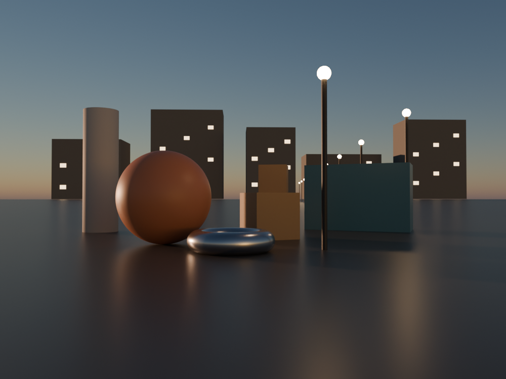
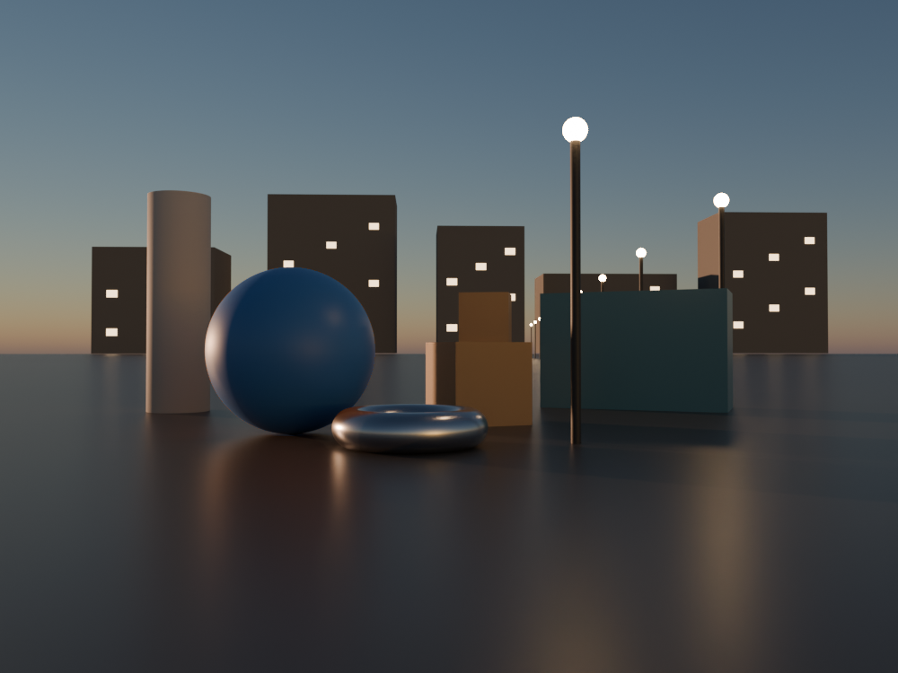
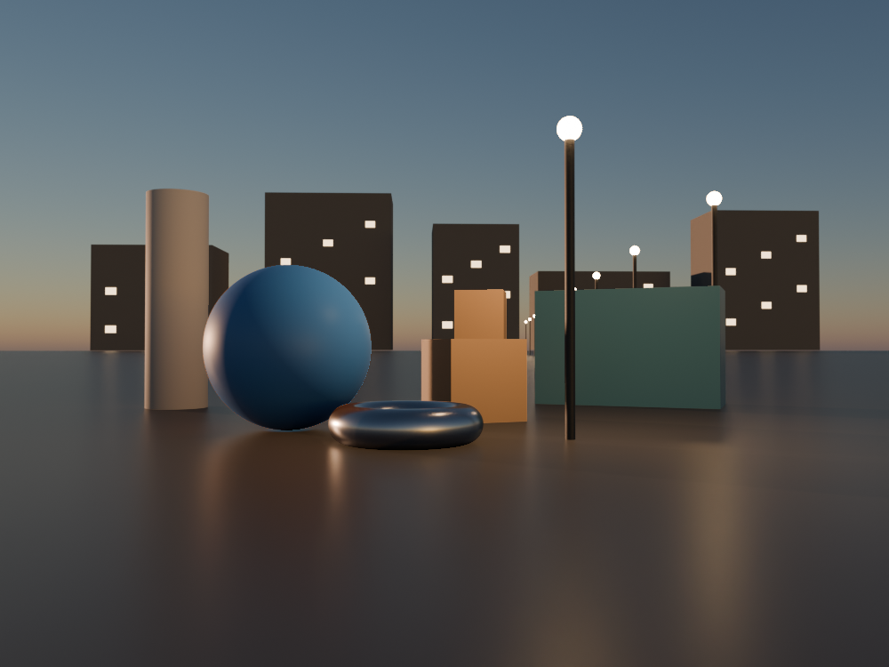
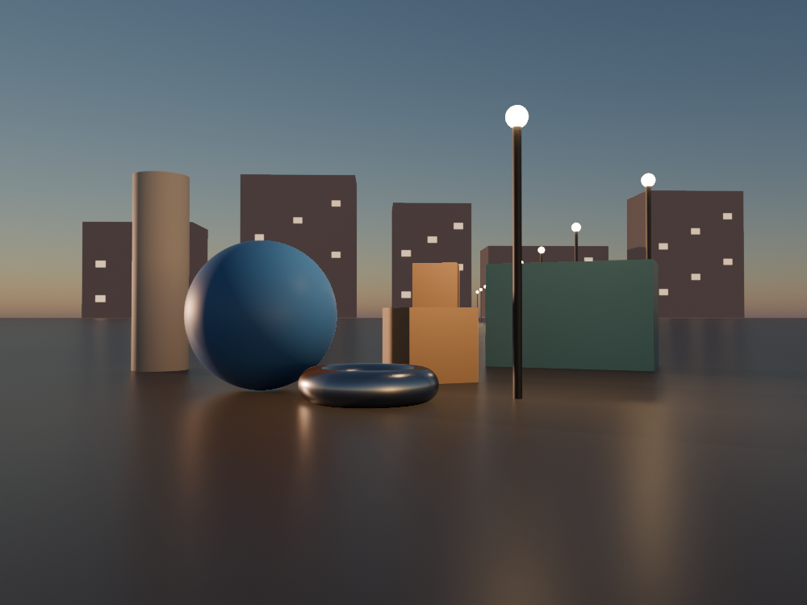
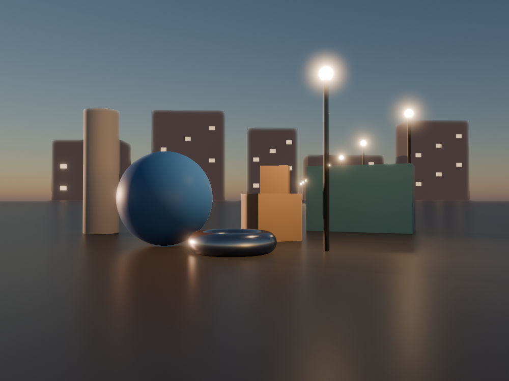
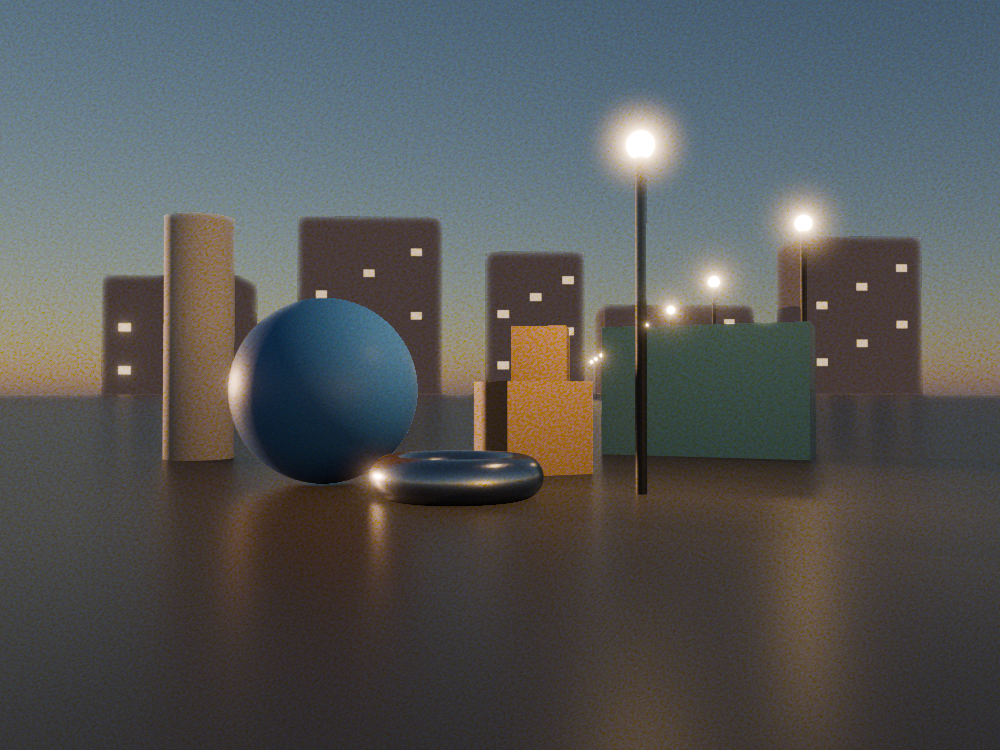
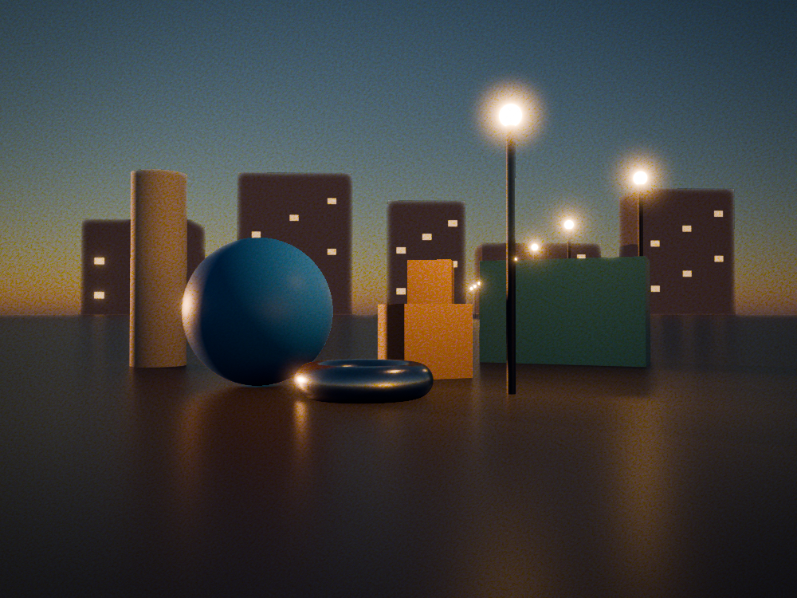

Products › BaseNode Packs › Compositing Pro › Tutorial: The final shot
The final shot
A square at dusk, rendered once by Cycles, then finished in the compositor the way a Nuke artist would: the render taken apart into its passes and put back together, a light added, haze, glow, grain and a grade. The 3D scene is never rendered again. Every change on this page is made after the render, in a few seconds.

You will learn
- The craft. Why compositors work on passes rather than on the finished image, and the usual order of a final shot: rebuild, relight, atmosphere, light effects, grade, grain.
- The .bn. A compositor tree as text:
useto call modules, pipes|>to chain image operations, and steps that differ by a few lines, so the change of each step is easy to find.
Before you start
You need Blender 5, the Base Node add-on, version 0.13.1 or later, and the Compositing Pro pack, which carries three of the modules this tutorial uses.
The steps are free to read and to copy; the modules they call are not.
If .bn is new to you, start with Lunar ground: it shows the language one line at a time.
| Module | Comes with | What it gives |
|---|---|---|
passes | Compositing Pro | The beauty rebuilt from Cycles' light passes, mattes drawn in the world from the Position, Normal and Depth passes, a depth fog and a light added after the render. |
light | Compositing Pro | Nuke's Glow and LightWrap, an exponential glow, an anamorphic streak, a glow around a matte. |
grain | Compositing Pro | Nuke's Grain, with the Kodak stocks of its presets, and Regrain. |
grade, merge, mask2d | the add-on, free | Nuke's Grade and Merge operations, saturation, exposure, and 2D masks. |
The graphs read the passes of the Render Layers node, so the scene must render them. In the View Layer properties, with Cycles as the render engine, turn on: Z, Normal and Position under Data; Direct, Indirect and Color of Diffuse, Glossy and Transmission, Emission and Environment under Light. A pass that is off is an output the node does not have, and the step stops with an error that names it.
Every block below is a complete .bn file, its code beside the nodes it builds. Two ways to try a step:
- Drag it. Drag the file icon of its block, or its title, onto Blender and keep Import into the .blend:
final_shotbecomes the scene's compositor, if the scene has none yet. A click on the file icon downloads the file instead. - Paste it. Press the copy button of its block, open the Compositor, press Ctrl+Shift+V.
Render with F12 to see it. The pictures are made from these exact files by render.py:
it builds the scene, renders it once with its passes to a multilayer EXR, then runs each step on that file. Cycles denoises the Combined pass only; render.py denoises the light passes too, one Denoise node each, before it writes them. Do the same, or render with more samples, or the rebuilt beauty will be noisier than the render.
From a render to a shot
A render is one image: once the light is baked into the pixels, you can only push their colours around. Cycles can also write how it made that image, as passes:
- Light passes. The light that reached each kind of surface, split into what came straight from a lamp or the sky (direct) and what bounced first (indirect), and the surface's own colour. Diffuse is the matte part of the surfaces, Glossy their reflections.
- Data passes. Where each pixel is: its distance to the camera (Depth), its position in the world (Position), the way it faces (Normal).
The light passes add up to the render. Keep them apart a little longer and each one is a handle: a colour, a light, a reflection you can change alone. The data passes tell you where things are in the scene, so a matte follows an object rather than a region of the frame. The compositor's job is then the one the render cannot do cheaply: add the air, the lens, the film and the look.
1. The render as it is
The smallest compositor there is: the image of the Render Layers node, the Combined pass, straight to the output.
step1_plate.bn: final_shot
RenderLayers() reads the scene being rendered. .image picks one of its outputs; the next steps read the others by name: l.diffuse_direct, l.depth, l.position…

2. The beauty rebuilt from its passes
rebuild_beauty adds the passes up the way Cycles did: for diffuse, glossy and transmission, (direct + indirect) × color, then emission and the sky (environment).
With nothing changed, its result is the image of step 1. So we change one thing on the way: the colour of the sphere.
step2_passes.bn: final_shot
- Find the sphere.
p_mattereads the Position pass: it is 1 within 0.9 m of the sphere's centre, in the world. The matte holds if the camera moves, and it needs no mask drawn by hand. - Paint it.
keymixputs a blue where the matte is 1, and the old colour elsewhere, into the diffuse colour pass. - Light it as before. The light passes are untouched: the sun on its left side, its shadow on the ground, the sky in its shading are those Cycles computed. A paint over the finished image would have to fake all of that.

Try: set glossy_direct to l.glossy_direct * 3.0: the reflections of the sun and the sky get stronger, on the ring and the paving, and nothing else changes.
3. A light added after the render
The lamp post should light the square, and in the render it barely does. A new render would take minutes. relight adds a point light now, from the passes: at each pixel, the surface's colour, times the light's colour, times how much the surface faces the light (the Normal pass), divided by the square of its distance (the Position pass).
step3_relight.bn: final_shot
- The pipe.
beauty |> relight(…)isrelight(beauty, …): the image goes in as the first input. A chain of pipes reads in the order the image goes through it, top to bottom, like a Nuke tree. - The albedo is
paint, the colour pass of step 2: the blue sphere takes the light as a blue surface. - No shadows. The light is computed from each pixel alone, so it lights what faces it, even behind another object. Keep it close to what it lights, and low in intensity.

4. A haze from the depth
Far things look paler and take the colour of the air. Without that, the buildings 240 m away look as near as the crates. depth_fog blends the image toward a colour by 1 − exp(−density × distance), the distance read from the Depth pass.
step4_fog.bn: final_shot
- The amount. At a
densityof 0.005 per metre, the crates, 10 m away, take 2 % of the haze; the buildings about two thirds. - The colour is that of the sky low on the horizon, darker: the air between us and the buildings, lit by the sunset.
- The sky. It has no surface, so Cycles gives it an enormous depth, and the fog would cover it entirely.
depth_slicemakes a matte of everything nearer than 1 km,solid;keymixkeeps the haze where it is 1 and the sky as it was elsewhere.

5. Glow and light wrap
A lens is not perfect: a strong light spreads around itself, and a bright sky bleeds over the edges of what stands in front of it. A render has neither, and it shows. Two effects of light bring them back.
step5_glow.bn: final_shot
- Light wrap.
light_wraptakes a foreground with its alpha, and a background.with_alpha(shot * solid, solid)makes the foreground: what stands in front of the sky, cut out bysolid. The Environment pass is the sky alone. The sky, blurred over 15 pixels, is added on the foreground's edges, where its blurred alpha falls;overlays it back on the shot. - Glow.
glowkeeps what is brighter than white (tolerance1.0, on its luma): the bulbs, the windows. It blurs that at five sizes, 3 to 48 pixels, averages them, and adds the result, times 0.6, to the image. - The order. The glow comes after the haze and the wrap: a lamp in fog glows over the fog, not under it.

Try: set the last input of light_wrap, its intensity, to 6.0, and watch the edges of the buildings. Then set the width of glow, its fourth number, to 8.0.
6. Film grain
A render is clean to the pixel, and next to filmed images that cleanness reads as CG. Grain hides it, and it holds the image together: every part of the frame shares the same texture.
step6_grain.bn: final_shot
- The stock.
grain_5279is Kodak Vision 500T, a fast film for low light, as at dusk: grain of its size, roughness and strength per channel, from Nuke's preset. The other stocks are 5248, 5217, 5218, GT5274 and FX214. - The amount. The presets are sized for 2K scans. This frame is 1000 pixels wide, so the grain shows twice as large as on a 2K frame; at 1.5 it is easy to see here. On a 2K render, start at 1.0.
- The seed picks another grain;
animated: truemakes it change every frame, as film does.
To match the grain of a filmed plate rather than a stock, regrain(clean, plate) takes the grain from the plate itself: its fine detail, added to the clean image.

7. The look
Last, the grade: the mood of the shot. Everything here comes with the add-on, free: grade, mask2d, merge.
The new lines go between the glow and the grain, because the grain must come last: it is on the film, and a grade after it would change it.
step7_look.bn: final_shot
grade, Nuke's Grade:blackpointtakes the darkest values to black,liftputs a little blue into the shadows,gainwarms the highlights,gammabelow 1 darkens the mid-tones. Dusk: cool shadows, warm lights.saturation1.15: a little more colour, after the grade has dulled it.- Darker corners.
circle_maskis 1 in a disc at the centre, falling off over 0.9;cornersis its opposite.exposure_stopstakes one stop off, through that mask only: the eye goes to the middle.

Try: set gamma to (1.1, 1.1, 1.1) for a lighter evening, or gain to (0.9, 1.0, 1.15) for a cold one.
The knobs
Each step adds a few inputs to turn. The ones that change the shot most:
| Where | Input | What it does |
|---|---|---|
p_matte | center, radius, falloff | The ball of the world the matte holds, in metres, and how softly it ends. |
relight | light_position, light_color, intensity | Where the added light is, its colour and its strength. |
depth_fog | color, near, far, density | The colour of the air, where the haze starts and stops, how fast it thickens. |
light_wrap | diffuse, intensity | How far the background bleeds in from the edges, and how much. |
glow | tolerance, brightness, width | What is bright enough to glow, how strong the glow, how wide. |
grain_5279 | amount, seed, animated | How strong the grain, which grain, and whether it moves. |
grade | lift, gain, gamma | The colour of the shadows, of the highlights, and the weight of the mid-tones. |
To finish your own render, enable the passes listed above, and change what names the scene: the centre and radius of p_matte, the light_position of relight, the distances of the fog. The rest holds for any shot.
Take it to Blender
The finished compositor, in one file. Drag the card onto Blender and keep Import into the .blend: final_shot becomes the scene's compositor, if it has none yet. A click on the card downloads the file.
The steps before it, to start again from any of them:
The files, with the script that renders this page's pictures, are in examples/tutorials/final_shot/.